v6西側洗い場
浴池西側日式洗い場 105×162，靠走道側清玻璃擋水；廁所 123×142。
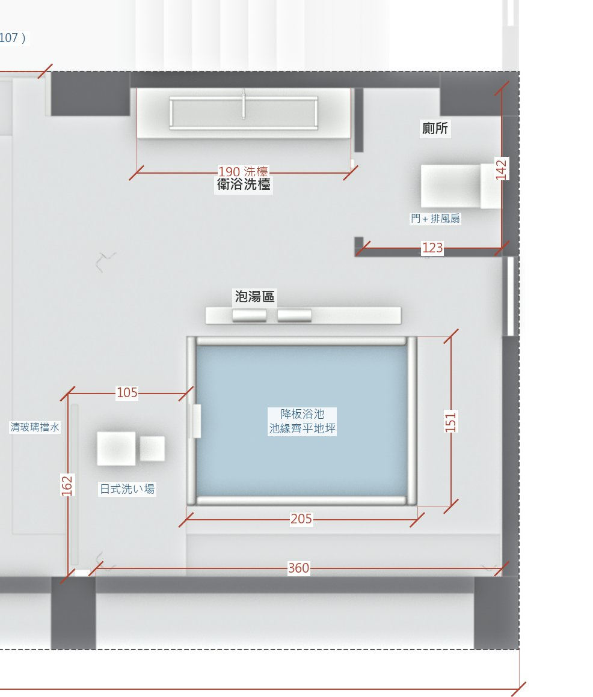
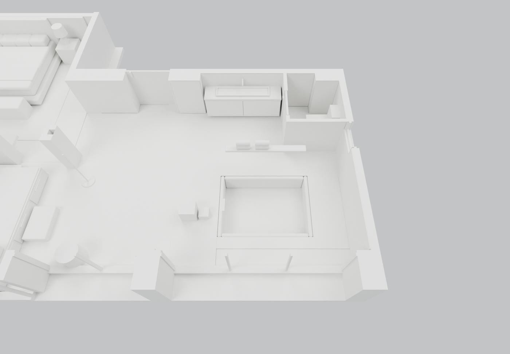
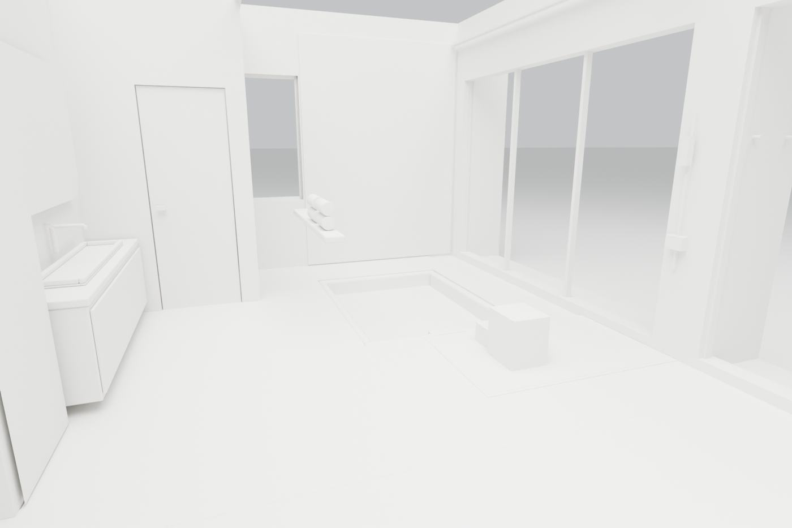
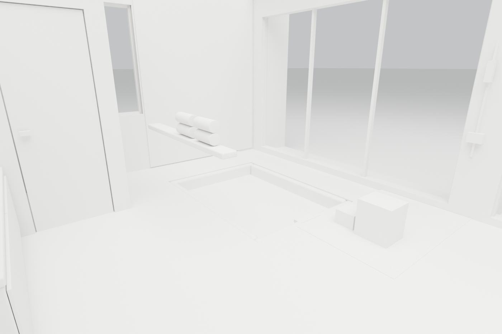
效果圖 60 張
三種淋浴配置（v6 西側洗い場／A 廁所南側／B 浴池東側）× 三視角 × 風格。浴池已預埋不動。AI 效果圖看質感，配置以平面圖與白模為準。
浴池西側日式洗い場 105×162，靠走道側清玻璃擋水；廁所 123×142。




效果圖 60 張
廁所南牆北移 35 cm（廁所 123×103），淋浴 123×97 貼廁所南牆，花灑裝實牆，西側清玻璃；東窗需霧面；置物檯縮短。
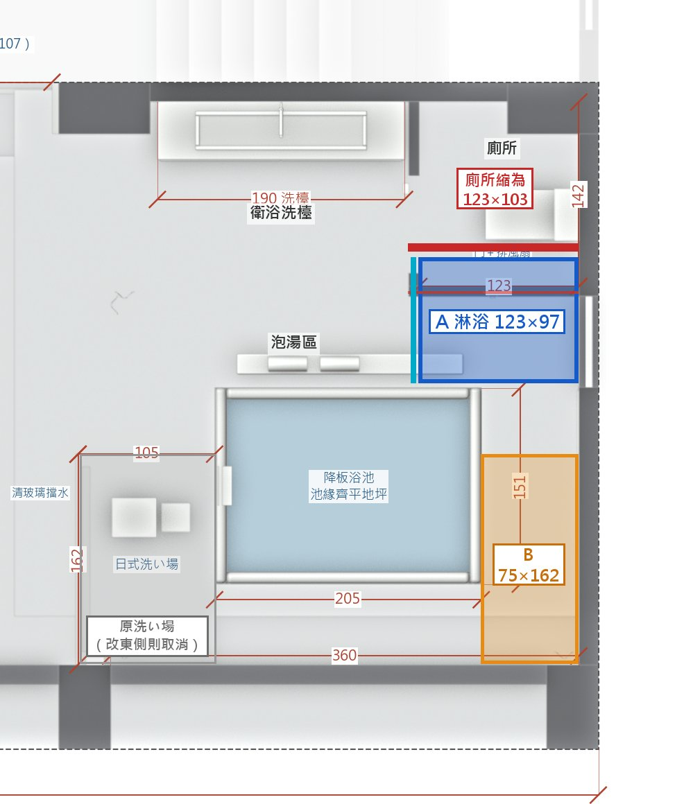
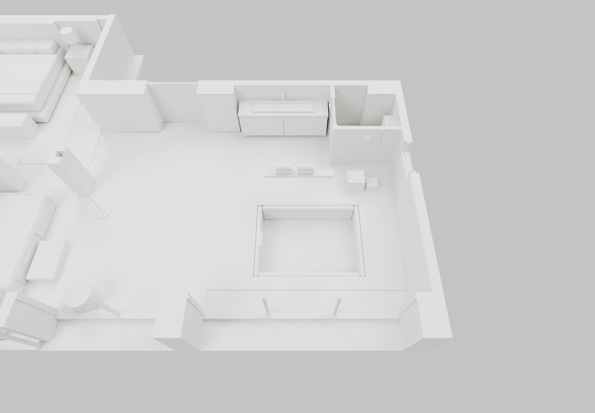
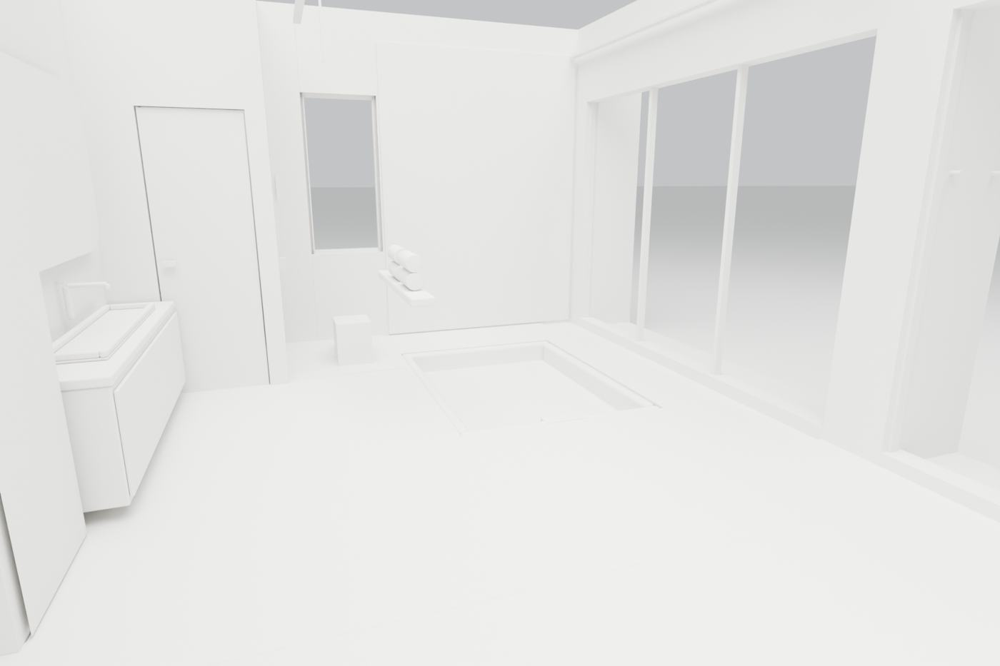
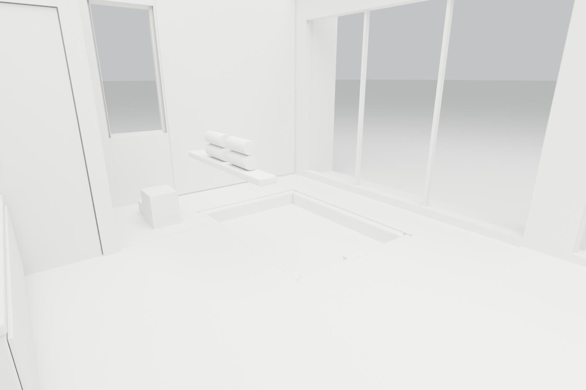
效果圖 30 張
廁所不動，淋浴 75×162 沿東牆，花灑裝東牆；寬度偏窄。
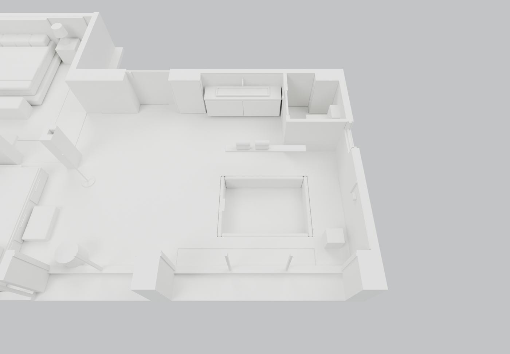
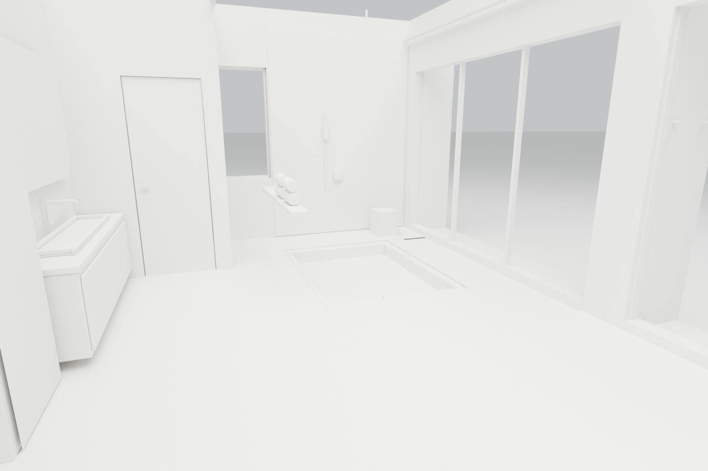
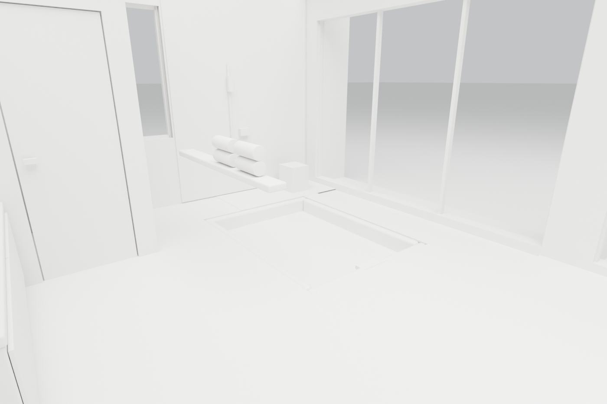
效果圖 30 張